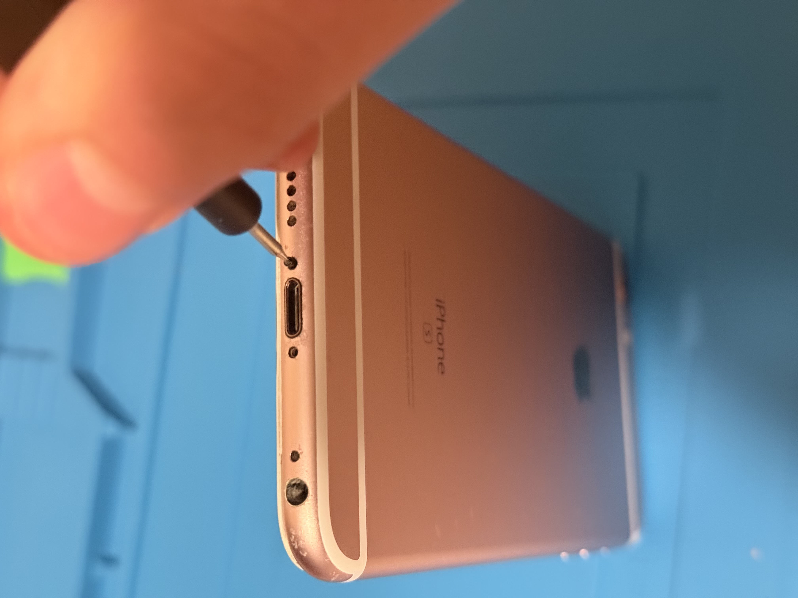
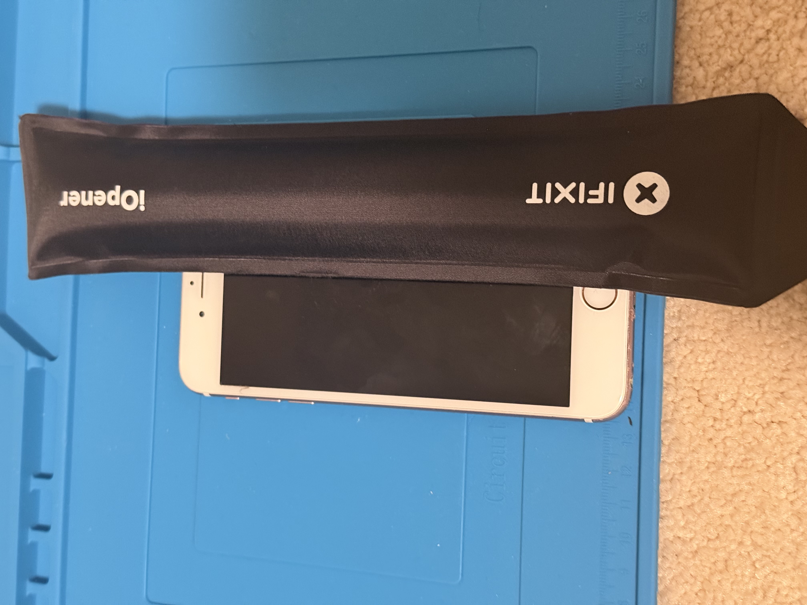
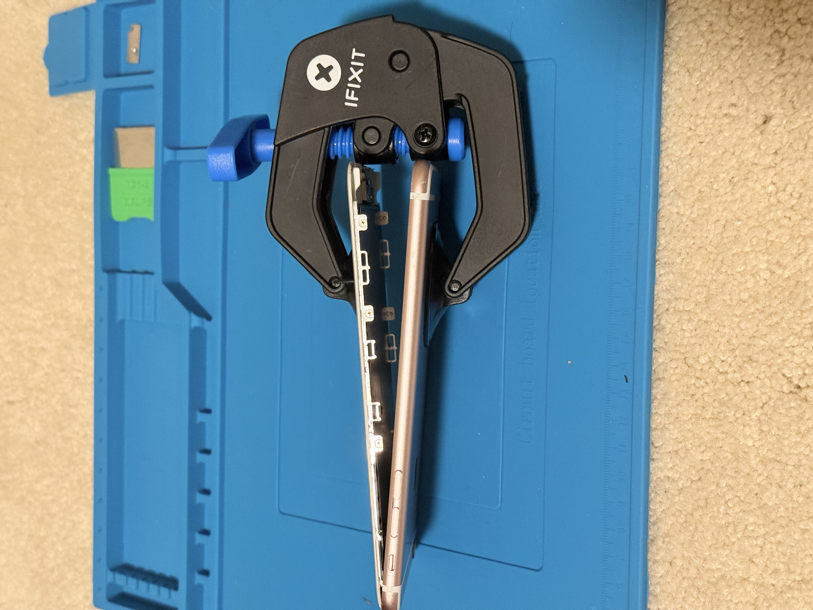
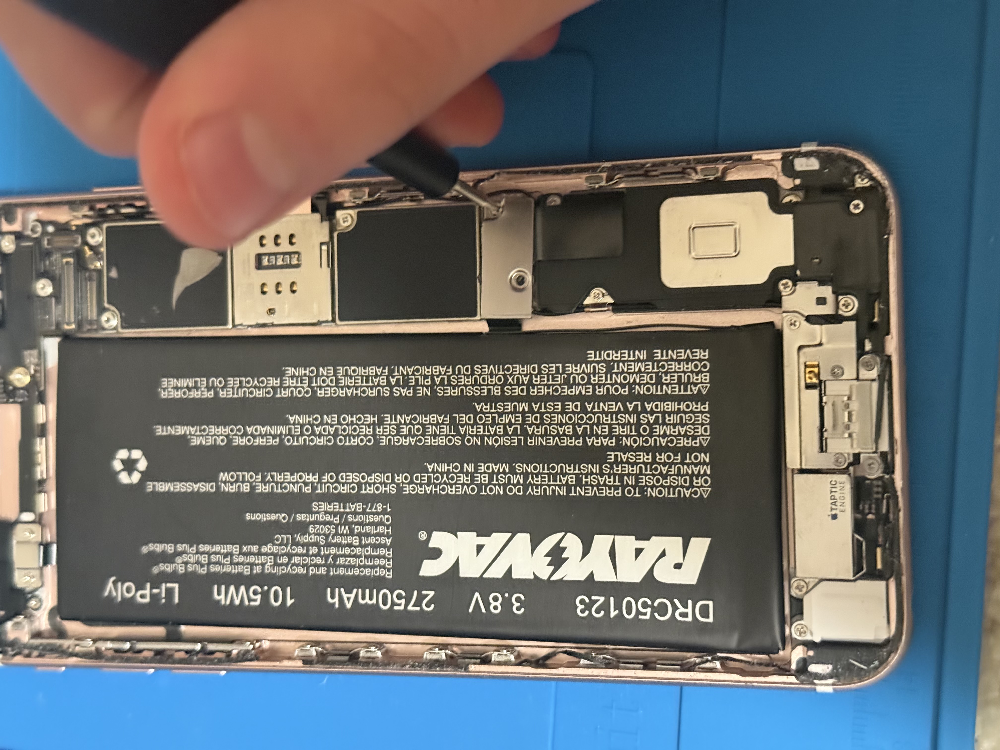

iPhone 6S Battery Replacement
Step 1: Remove Screws
Use a pentalobe screwdriver to remove the bottom two screws.
Step 2: Loosen Adhesive
Use a heat source to soften the adhesive.
Step 3: Lift Phone
Use a suction cup to carefully pry open the phone.
Step 4: Remove Metal Plate
Unscrew the metal plate near the middle right and disconnect 1 ribbon cable.
Step 5: Remove Adhesive and Battery
Use tweezers to peel back the tips of the two adhesive strips along the bottom edge of the battery. Pull out the white adhesive with tweezers, then pry out the battery. Apply new adhesive and insert the new battery. Repeat backwards.